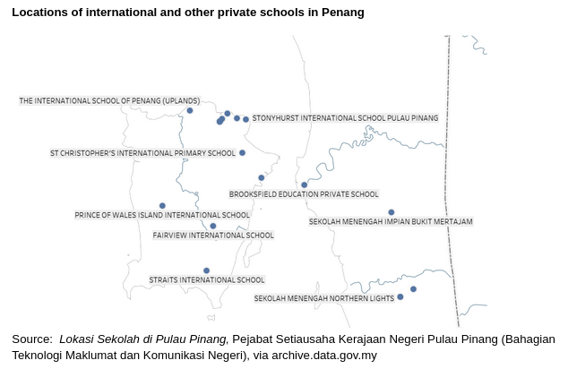

First published in Penang Monthly (August 2024).
Penang’s education scene is changing rapidly. While Malaysia’s private school enrollment remains modest compared to the region, it is seeing a concerning shift. Public secondary schools in Penang are experiencing a drop in enrollment, while private institutions, particularly international schools, are booming. Is this a simple case of parents seeking better options, or is it something more? This trend raises concerns about a widening education divide and potential cracks in Penang’s social cohesion.
The allure of private schools
Malaysia boasts a relatively low private school enrollment rate compared to its Southeast Asian neighbours. However, a concerning trend threatens the long-held role of public education in fostering social cohesion.
Since the ban on citizens attending international schools was relaxed in 20081, the share of secondary school-age children enrolling in private institutions has almost tripled from 3.4% (2002) to 9.4% (2021), while at the primary level, the rate has risen dramatically from just under 1% in 2002 to 6.3% (2021), even outpacing enrollment rates at the secondary level until recently.
Penang parents’ pivot towards private schools coincides with a surge in the popularity of private education nationally, spurring the recent proliferation of international schools in Penang. In Penang, public secondary school enrollment has declined by 19.2% over the past decade (2013 - 2023). Primary school enrollment decreased by 5.3%, comparable with a 6.2% decrease in Penang’s 5-14 population in the same period2. Concurrently, according to Ministry of Education reports, the number of international schools in Penang has risen from 8 to 12.
2 According to the Department of Statistics Malaysia (DOSM) population estimates, Penang’s 5-14 citizen population decreased by 11% in the same period. Assuming the non-citizen population makes up a negligible portion of public school enrolment, the muted decrease in primary public school enrolment suggests that the citizen population may now be slightly more likely to attend public primary school. It is also important to note that Penang vernacular (primary) schools have seen double-digit declines in enrolment in the past decade (Chinese: -13%, Tamil: -11%; 2013-2023), while national primary schools have maintained their headcount.
The reduction in public school enrolment is unlikely to indicate a significant pattern of dropouts from formal education in Penang. However, this may be a concern at the national level. UIS statistics indicate that one in 20 (4.7%, 2022) primary school-age children in Malaysia do not attend any school. In Penang, public school enrollment in Year One alone (20,843, 2023) equals 96% of children born in 2016 (21,781). In contrast, Malaysia’s 2023 Year One public school enrolment (447,876) was only 88% of children born in 2016 (508,203).
The faster pace of decline in public secondary school enrolment, relative to Penang’s demographic changes, suggests that the shift in preference for private education dominates at the secondary level, as opposed to the primary level. Penang’s national primary school graduates are over twice as likely not to attend public secondary school than the average Malaysian Year Six student. Almost one in five (17.8%) eligible primary school graduates in Penang did not enrol in a secondary public school in the subsequent year, versus 8.3% for Malaysia (2023).
The outsized presence of Chinese-medium private schools is especially noteworthy. Although enrollment (5,702, June 2023) is on par with international schools (5,010, June 2023), it is crucial to consider that independent Chinese schools cater solely to the secondary level. Enrolment in these schools is almost double secondary-level enrolment in international schools in Penang (2,695, June 2023). For comparison, international and independent Chinese schools’ enrollment at the secondary level is equivalent to 8.7% of secondary-level students enrolled in public schools in Penang (96,896, 2023).
The demand for international education is booming in Penang. Enrolment in international schools has grown at 5.2% annually (cumulative annual growth rate, CAGR) between 2013 and 2023, outpacing plateauing enrollment growth in Chinese private schools (2.3% CAGR). According to a Tenby Schools Penang representative, this surge is driven by parents’ desire for their children to develop strong English language skills and benefit from a broader curriculum that fosters independent learning. Interestingly, primary-level enrollment in international schools is catching up with secondary-level enrollment, even surpassing secondary enrollment for a brief period in 2021. Tenby Schools Penang confirms this observation of a rising influx of younger students.
It is essential to note the substantial role of the religious private education sector3. Between various privately-run religious education entities, including people’s religious schools, private religious schools (sekolah agama swasta), tahfiz schools and sekolah pondok, Penang registered 8,836 students across 92 institutions in 2023, well exceeding international schools.
3 An overview of the religious private education sector is beyond the scope of this article. For a primer, refer to The Potential of Independent Religious Schools: A Case Study of Al-Amin (Deviyati, 2016) and Three things about: Malaysia’s (private/ state-funded) Islamic schools (https://www.malaymail.com/news/malaysia/2017/04/29/three-things-about-malaysias-private-state-funded-islamic-schools/1366345).
Chinese private schools
Chinese private schools, also known as independent Chinese schools, enrol some 76,634 students in 60 schools across Malaysia (June 2023), five of which are in Penang4. These schools are also huge: each school enrols 1,140 students on average, more than double international schools, who enrol an average of 418 students per school in Penang. Almost all who enrol are Malaysian citizens, with reportedly only 0.87% of foreign enrolment in 2022 across Malaysia. The more prominent Chinese national-type public secondary schools—Penang Chinese Girls’ High School, Chung Ling High School and Jit Sin High School—co-locate with their private counterparts, blurring the lines between public and private education.
International and other private schools
The international school sector presents a distinct picture. These schools primarily cater to expatriate children and affluent Malaysians seeking a globalised education5. Up to 2008, citizens were not allowed to attend international schools. Today, nationally, 55,999 Malaysian citizens comprise 70% (2023) of total student enrolment in international schools, and 50% more citizens enrol in international schools compared to 2017 (Beh, 2023). Unlike Chinese independent schools, which are more affordable, international school fees often put them out of reach for the average Penangite. International Schools Database estimates median fees for international schools in Penang to be USD 5,768 in 2022, amounting to 33% of the median Penang household’s annual income6.
5 “Imagine an Education Hub: Leveraging Penang’s International School Ecosystem”, Beh, MT (2023) https://penanginstitute.org/publications/issues/imagine-an-education-hub-leveraging-penangs-international-school-ecosystem/#ftn1b
6 Median household income is RM6,502 per month in 2022. Computed with KL USD/MYR reference rate of 4.4132 as at 30th December 2022.

The great education debate
As Penang parents increasingly seek private education options, a complex national issue comes to light: Malaysia’s seemingly endless debate on how to run public schools, a tension dating back to the post-war period7 with the Barnes and Fenn-Wu reports.
7 Tze , Danny, Ken Wong, and Vivien Wong. “Chinese Education in a Multiethnic Society: Malaysia Experience.” The Cultural Legacies of Chinese Schools in Singapore and Malaysia, edited by Cheun Hoe Yow and Jingyi Qu, Routledge, 1 Mar. 2021.
The focus on strengthening Malay language proficiency in public schools, a longstanding national goal, can sometimes overshadow broader discussions about public education. Meanwhile, advocates for Chinese language education and Christian communities grapple with safeguarding their historical and culturally significant schools, established during a period of diverse educational approaches, in the face of a more centralised national education system.
On the other hand, private schools are mostly shielded from the contentious political debates that plague public education discussions in Malaysia. However, this creates a two-tiered system, potentially entrenching social and educational disparities.
Different languages
The question of language has been a central theme in the evolution of Malaysia’s national education system. Although Malay is the main medium of instruction in public schools, science and maths education shifted towards English under the PPSMI policy during the Mahathir administration, and was subsequently reversed by the MBMMBI policy in 2010. The introduction of the Dual Language Programme (DLP) in 2016 provided some schools with the option to deliver science and maths in English, and is currently implemented in 2,501 schools across Malaysia8.
However, a recent change adds a new layer of complexity. Starting in the 2024/25 academic year, students must demonstrate basic Malay language skills to enrol in DLP classes. Additionally, DLP schools need to meet overall Malay language performance standards and offer at least one class with science and maths taught in Malay or the mother tongue.
The latter requirement in particular has caused confusion and frustration, especially in schools with no interest in non-DLP classes. According to press reports9, Year One students in Kuala Lumpur had to undergo extensive assessments in multiple languages and subjects to qualify for DLP enrollment, although the Ministry has clarified that it had not prescribed assessments to determine DLP eligibility.
10 Dewan Rakyat Hansard, 27th November 2023, p.103. Available at http://www.parlimen.gov.my/files/hindex/pdf/DR-27112023.pdf
Justifying the rule for non-DLP classes within DLP schools, the Education Minister cited low Malay language proficiency observed during field visits to five DLP schools, along with the need to safeguard the national language10.
Different schools
Penangites marked the end of an era when SMK Convent Pulau Tikus (CPT) and SMK Convent Light Street (CLS) shut down as government-aided schools in 202311, not long after SK Pykett Methodist closed its doors in 2019. Representatives of the Infant Jesus Sisters (IJS)12, owner of the Convent schools, said they plan to convert these schools to private schools, and in 202013, ACE Edventure announced plans to set up a private international school on the grounds of Convent Light Street. Likewise, Methodist College Kuala Lumpur (MCKL) has established its Pykett campus on the grounds of SK Pykett Methodist, a 20-minute drive from the new Wesley Methodist (International) School campus.
12 See The Devoted Pioneers of Girls’ Education in Malaya in the January 2016 issue for background on the IJS.
14 Tze , Danny, Ken Wong, and Vivien Wong. “Chinese Education in a Multiethnic Society: Malaysia Experience.” The Cultural Legacies of Chinese Schools in Singapore and Malaysia, edited by Cheun Hoe Yow and Jingyi Qu, Routledge, 1 Mar. 2021.
These closures follow in the footsteps of independent Chinese schools, which diverged from the national system in the wake of the 1961 Education Act14. Meanwhile, although Chinese public schools have gained popularity amongst non-Chinese Malaysians15, concerns regarding government policies remain. Advocates for Chinese language education face frequent challenges, including the government’s reluctance to recognise the Unified Examination Certificate (UEC) issued by Chinese independent secondary schools16 and a lack of transparency in funding for government-aided schools17.
Educating a diverse population
The rise of private education in Malaysia presents a challenge and an opportunity. The government must prioritise a two-pronged approach to revitalise public schools and ensure a cohesive educational landscape.
Firstly, addressing the root causes of the shift towards private education is crucial. The Ministry must actively listen to parents’ concerns, improve public school facilities and resources, and foster a more engaging and enriching learning environment. As the government moves towards rationalising civil service contracts18, pay packages and working conditions must remain attractive to prevent an outflow of talent towards the private education sector.
Secondly, the government needs to take decisive steps to depoliticise education. The Ministry must fully embrace Malaysia’s multilingualism as a core strength of the Malaysian education system, with a pragmatic approach to elevate Malay language proficiency while recognising English as the lingua franca of STEM, acknowledge the diversity of Malaysia’s education stakeholders, while guaranteeing policy stability for parents, students and teachers alike.
By fostering a more inclusive and high-performing public system, Malaysia can ensure every child receives a quality education, regardless of background or socioeconomic status. This vision is achievable if the government prioritises open communication, invests in quality education for all, and embraces the richness of Malaysia’s multicultural heritage.